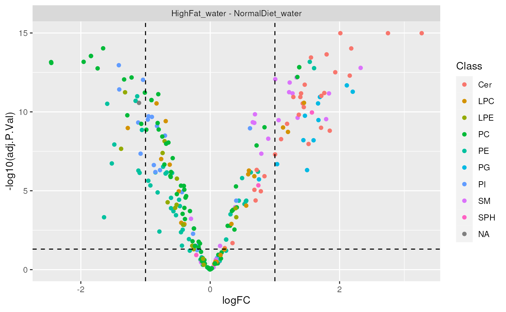

de_analysis and de_design perform differential analysis of measured
lipids that are associated with a sample group (annotation). de_analysis
accepts a list of contrasts, while de_design allows users to define a
design matrix, useful for complex experimental designs or for adjusting
possible confounding variables.
de_analysis(data, ..., measure = "Area", group_col = NULL)
de_design(data, design, ..., coef = NULL, measure = "Area")
significant_molecules(de.results, p.cutoff = 0.05, logFC.cutoff = 1)
plot_results_volcano(de.results, show.labels = TRUE)LipidomicsExperiment object, should be normalized and log2 transformed.
Expressions, or character strings which can be parsed to
expressions, specifying contrasts. These are passed to
limma::makeContrasts.
Which measure to use as intensity, usually Area (default).
Name of the column containing sample groups. If not provided, defaults to first sample annotation column.
Design matrix generated from model.matrix(),
or a design formula.
Column number or column name specifying which coefficient of the linear model is of interest.
Output of de_analysis().
Significance threshold. Default is 0.05.
Cutoff limit for log2 fold change. Default is 1.
Ignored in multi-group (ANOVA-style) comparisons.
Whether labels should be displayed for
significant lipids. Default is TRUE.
TopTable as returned by limma package
significant_molecules returns a character vector with names of
significantly differentially changed lipids.
plot_results_volcano returns a ggplot object.
significant_molecules: gets a list of significantly changed lipids for
each contrast.
plot_results_volcano: plots a volcano chart for differential analysis
results.
# type ?normalize_pqn to see how to normalize and log2-transform your data
data(data_normalized)
# Specifying contrasts
de_results <- de_analysis(
data_normalized,
HighFat_water - NormalDiet_water,
measure = "Area"
)
# Using formula
de_results_formula <- de_design(
data = data_normalized,
design = ~group,
coef = "groupHighFat_water",
measure = "Area"
)
# Using design matrix
design <- model.matrix(~group, data = colData(data_normalized))
de_results_design <- de_design(
data = data_normalized,
design = design,
coef = "groupHighFat_water",
measure = "Area"
)
significant_molecules(de_results)
#> $`HighFat_water - NormalDiet_water`
#> [1] PE 32:1 PE 32:2 PE 34:2 PE 34:3
#> [5] PE 36:5 PE 38:2 PE(O-34:2) PE(O-38:4)
#> [9] PE(P-32:0) PE(P-34:1) PE(P-34:2) PE(P-38:3)
#> [13] PG 16:0/18:1 PG 16:1/16:0 PG 18:0/16:0 PG 18:1/18:0
#> [17] PG 18:1/18:1 PG 18:2/16:0 PG 18:2/18:0 PG 18:2/18:1
#> [21] PG 20:4/16:0 PG 20:4/16:1 PI 32:2 PI 32:3
#> [25] PI 34:1p PI 34:2 PI 34:3 PI 36:3
#> [29] Sa1P d 18:0 SM 18:1/16:2 SM 18:1/18:0 SM 18:1/18:1
#> [33] SM 18:1/20:0 SM 18:1/20:2 SM 18:1/22:3 SM 18:1/22:4
#> [37] SM 18:1/22:5 SM d18:0/18:0 SM d18:0/20:0 Cer d18:0/C16:0
#> [41] Cer d18:0/C18:0 Cer d18:0/C20:0 Cer d18:0/C22:0 Cer d18:0/C24:0
#> [45] Cer d18:0/C24:1 Cer d18:0/C24:2 Cer d18:1/C16:0 Cer d18:1/C16:1
#> [49] Cer d18:1/C18:0 Cer d18:1/C18:1 Cer d18:1/C20:0 Cer d18:1/C20:1
#> [53] Cer d18:1/C20:2 Cer d18:1/C22:0 Cer d18:1/C22:1 Cer d18:1/C22:2
#> [57] Cer d18:1/C22:3 Cer d18:1/C22:5 Cer d18:1/C22:6 Cer d18:1/C24:1
#> [61] Cer d18:1/C26:0 Cer d18:2/C20:0 PC 36:5 PC 36:6
#> [65] PC 40:2 PC 40:8 LPC 20:0 LPC 20:4
#> [69] LPC 22:0 LPC 26:0 LPE 20:0 LPE 20:5
#> [73] PC(O-34:2) PC(O-34:3) PC(O-38:2) PC(O-40:1)
#> [77] PC(P-34:1) PC(P-34:2) PC(P-34:3) PC(P-36:5)
#> [81] PC(P-38:0) PC(P-38:1) PC(P-40:0)
#> 277 Levels: PE 32:0 PE 32:1 PE 32:2 PE 34:1 PE 34:1 NEG PE 34:2 ... PC(P-40:6)
#>
plot_results_volcano(de_results, show.labels = FALSE)
